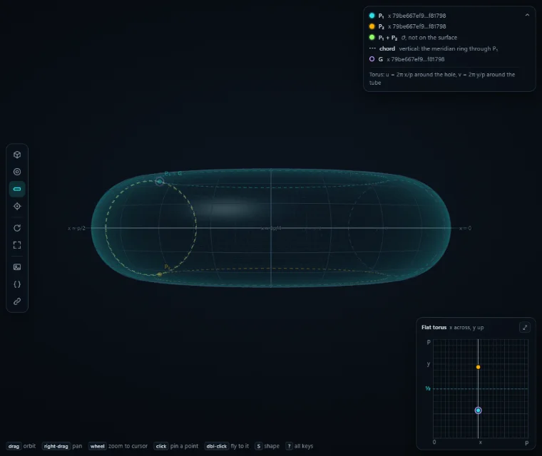

secp256k1: G and −G are mirror images
P₁ = 02‖x(G) is G and P₂ = 03‖x(G) is −G: the same x, and y ↦ p − y. On the torus that is a reflection through the equatorial plane, seen edge-on in the side view (key 3), so both points share one meridian ring. Their chord is vertical and P₁ + P₂ = 𝒪.
Open this statethen press 3 for the side view